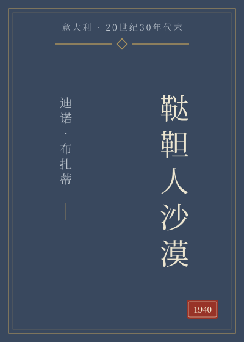
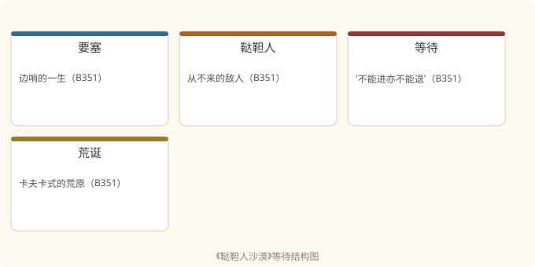

鞑靼人沙漠
一、基本信息
| 作者 | 迪诺·布扎蒂 |
|---|---|
| 成书/出版 | 1940年（Britannica B351：Il deserto dei Tartari (1940；亦译 The Stronghold)——'generally considered Buzzatis finest'） Dino Buzzati — Encyclopaedia Britannica（百科全书） |
| 国别/地区 | 意大利 |
| 时代 | 现当代 · 20世纪30年代末 |
| 体裁 | 长篇小说 |
| 语言 | 意大利语 |

《鞑靼人沙漠》等待结构图（主题·结构图）
二、创作背景
Britannica（B351）：'generally considered Buzzatis finest'——边哨士兵'poised in expectancy for an enemy who never comes and unable to go forward or retreat'（等待永不来的敌人，不能前进亦不能撤退）。
Britannica（B351）：布扎蒂早期山岳小说'introduced the Kafkaesque surrealism, symbolism, and absurdity'；受卡夫卡影响而有其'own ironic, detached humor'。
Britannica（B351）：布扎蒂——晚邮报终身记者。
三、内容脉络
边疆要塞的等待：士兵们终身守候从不来的'鞑靼人'（B351：expectancy for an enemy who never comes；堡名与人物名通说待核）。
'不能前进亦不能撤退'：一生的消耗（B351）。
四、主要人物表
| 人物 | 身份 | 说明 |
|---|---|---|
| 德罗戈 | 新兵 | （通说待核，B351未载） |
| 堡 | 要塞 | （B351：frontier post——名待核） |
五、主题与艺术特点
- 等待的荒诞（B351）。
- '不能前进亦不能撤退'的存在困境（B351）。
- 卡夫卡式荒诞的意大利化（B351：Kafkaesque surrealism）。
六、影响与评论
- Britannica：'generally considered Buzzatis finest'（B351）。
Dino Buzzati — Encyclopaedia Britannica（百科全书） - Britannica：'detached sense of irony and humor'（B351）。
Dino Buzzati — Encyclopaedia Britannica（百科全书）
七、阅读建议
难点
- '等待'的时间感（一生与一日的交错）。
- 与《城堡》《等待戈多》的互文。
- 《鞑靼人沙漠》中译本（人民文学/上海译文等——通说待核）。
- 意大利文原版。
布扎蒂首选；可与《城堡》《等待戈多》对读。
八、待核实
- 德罗戈人名核对（B351未载）。
- 堡名（Bastiani说）待核。
- 1976年电影改编说待核。